ENGL 398 : Minecraft & Modernity
Owen/owmacohe's Flâneur log
orange = Post-game reflections
yellow = In-game notes
Report 4 : A Foothold Among The Chaos
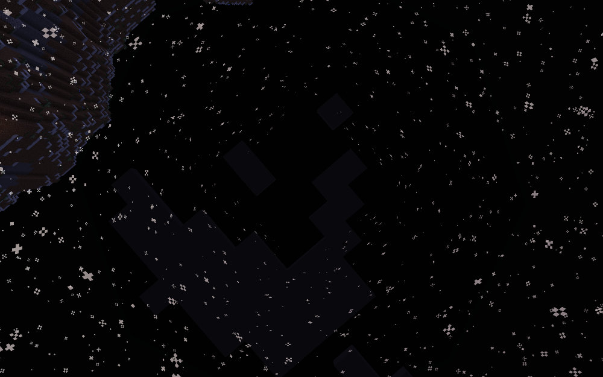
square snow from the sky
falling everywhere but here
does it wait for me?
I began this week with a growing multitude of ideas and concepts on the readings and class experiences, all vying for attention in my head. I've now begun to connect them up loosely in the form of a mind map and a wiki. Once they're in an acceptable state, I'll share them with those that are interested.
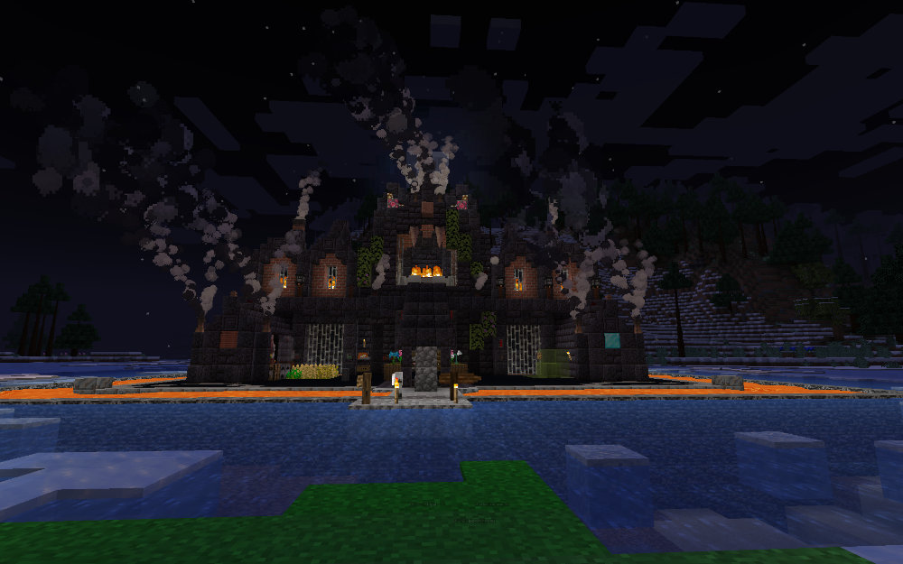
The Planner 2 monument, blazing away in the dark of the night, belching its continuous fumes up into the sky. It's magestic, in a terrible sort of way
Another class day on the server passes, with all us 25-30 players cramming into the same space once again. It's actually calming now, this process of stopping and starting. I know some routines, I know some objectives. It's just about doing the work to get it done I suppose. I'm just rambling. Musing about a growing community tends to be amorphous. Though this amorphousness seems to be exactly what we're looking for here. No one really know what's going to happen, and it's worth just sitting in that for a while. Mild directionlessness seems to be what what propells everything, or rather, the emotions that arise against it do.
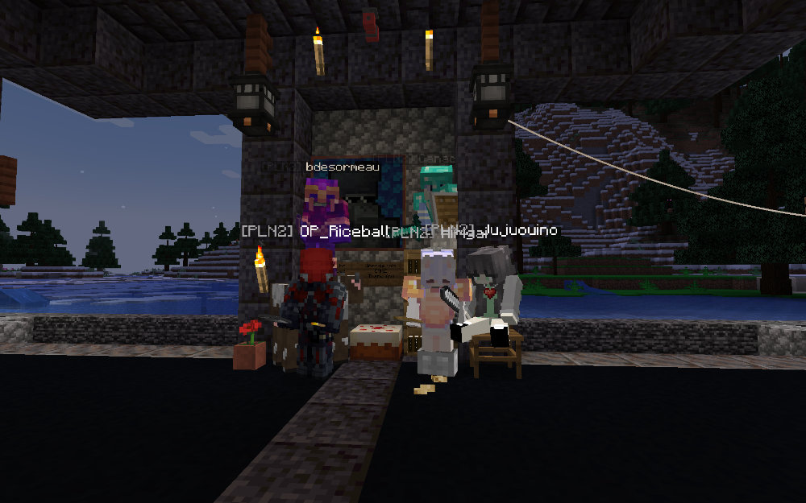
The Planner 2 ensemble, gathered for a group photo in front of their strange monkey painting and prolific bookshelf
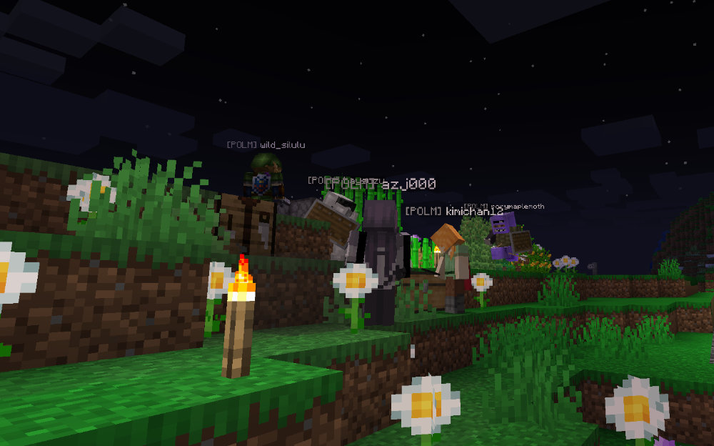
The Polymaths, hard at work on something I didn't really understand. They were so focused, it was hard to get a shot without one running away to grab a resource
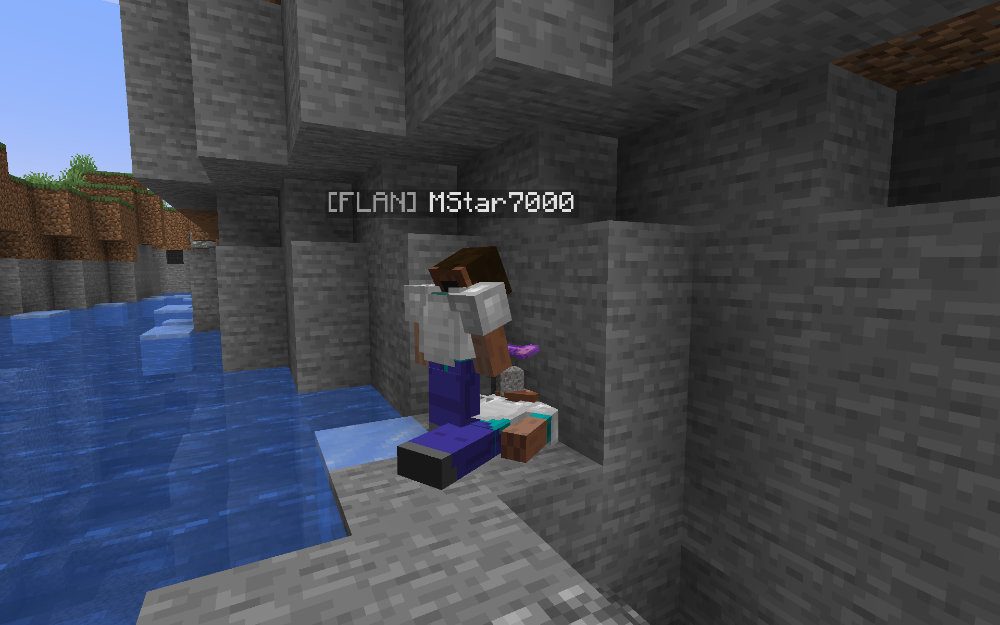
After I helped MStar7000 find her corpse, I asked her to pose in front of it. It's evocative of something, but I'm too tired to discern what
In the coming days, I plan to find a suitable mountain or deep hole in which to bury my heaps upon heaps of now unusable canvasses. Sure, I could just throw them all away into magma or something, but that doesn't feel right. They're important. A part of history now. And if I can somehow pay homage to our own species' modernist failures with radioactive technology, I think it would be worthwhile. I still haven't done this. Most likely because it requires time to find a suitable place, forethought to how to encapsulate and design the holding space, and some way to properly disseminate information about it. Perhaps that's what I'm doing right now. First step though: find a nice deep bunker.
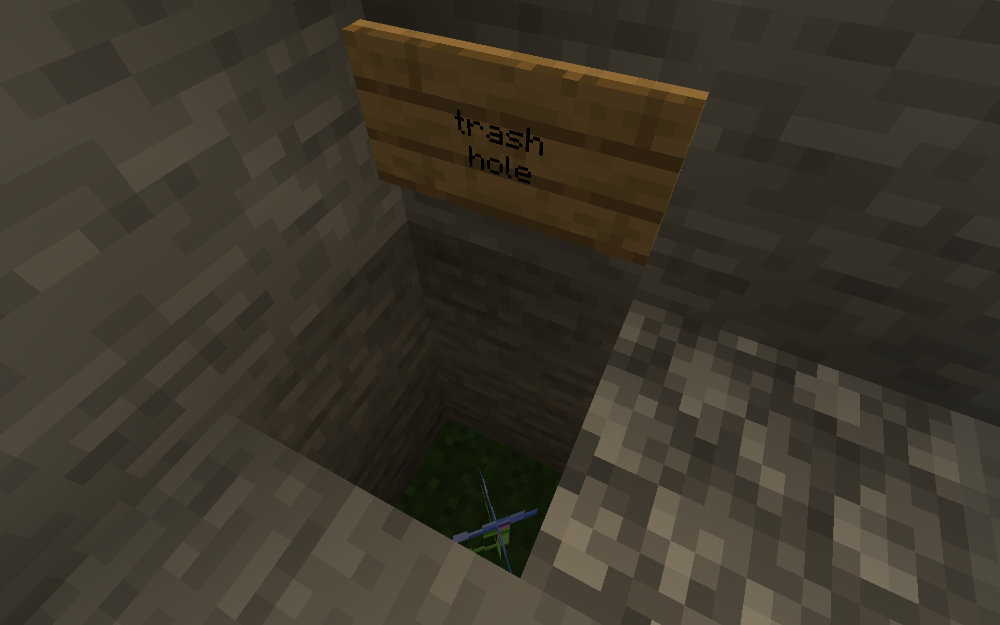
A small blue flower has begun to grow in the shallow hole I dug to be the trash bin in my room. Perhaps it's a biproduct of all the radioactive waste I'm keeping down here...
After that's done, my next goal will be to find an easier and more sustainable way to put images up again, with the Camera Mod camera. Image frames are expensive though, so maybe I can recruit someone to help me. I really am fitting into that 'active Flâneur' mould. I have to head out how, and go downtown for my next class. With plans and images swimming in my head, I take leave of our eclectic little cluster.
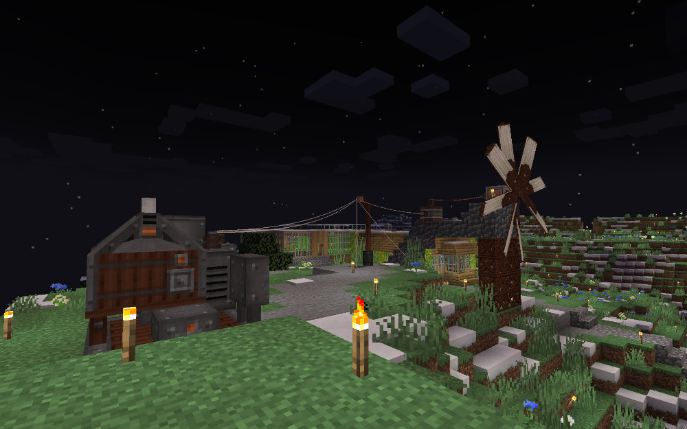
rorymaplemoth has done a lot since I last visited their base. This new collection of gears and wires reminds of of a low-to-the-ground antarctic base, wiling away on the mountain
I tend to travel by bike quite a lot in the city, due to its reliability and my own excuse for exercise. It makes me wonder how feasible it would be to implement a bicycle mod in Minecraft. I would imagine that bikes are entirely modern in concept and function. Sleek, efficient, admirable, dangerous. How would bikes compare against the likes of horses, elytras, or teleportation? I return now, late into the night, after a long day of class work and communication. I'd honestly expected to be the only one on this late, but as it turned out, Bl4ckbirds and WonderAnchor were both around to torment me in lovely ways. My image-frame-making session quickly devolved into Bl4ckbirds levitating me around and showering me with leather and string.
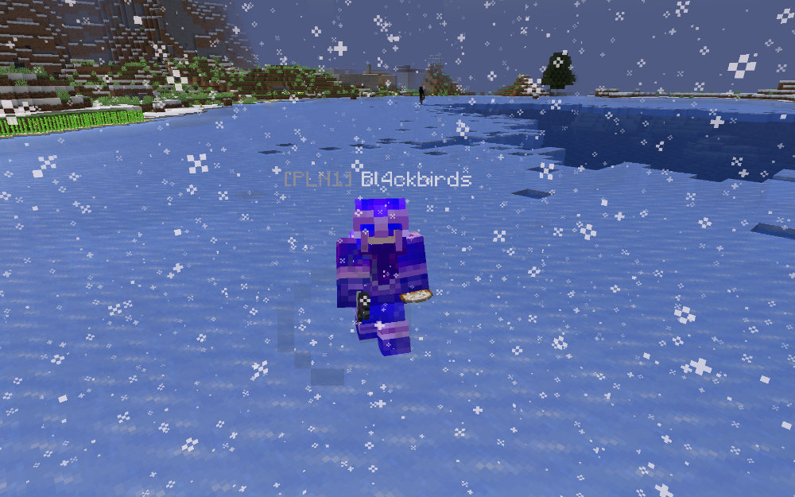
Photographic evidence of Bl4ckbirds's crimes. The crimes in question being levitating me around whenever I'm trying to craft something important
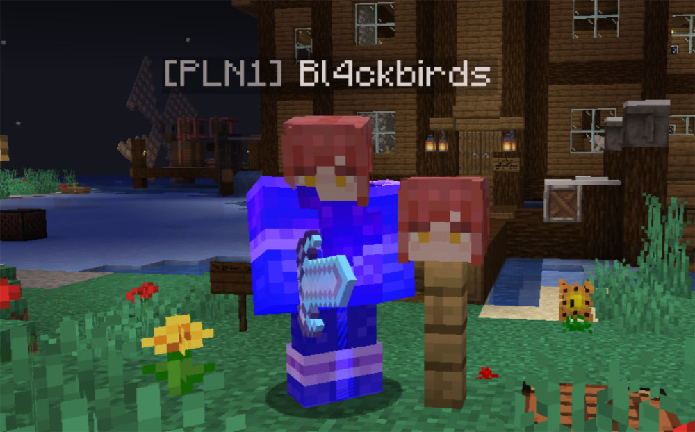
I'm not even sure what's going on here...
We experimented with the new placeable images. We wanted to see if they'd produce the same lag. I won't bore you with the very limited "Science" that we did do, but results are still inconclusive. Some lag, but it's hard to tell where it might be coming from. We'll see what other people think. In the mean time, we'll have to sit between the uncomfortable divides of progress and waste. Waste is something I've been thinking a lot about lately. Its reuse, its visibility, and its worth. But that's something for another day.
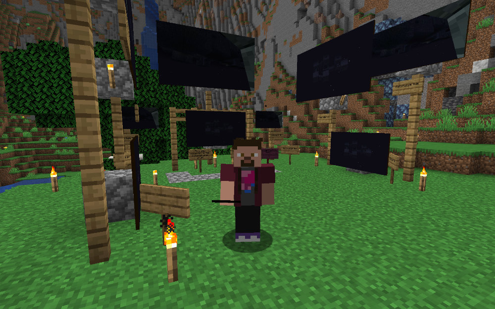
I was able to replace all of the images from my exhibit. Hopefully this one won't lag anyone's game. Also, a rare Minecraft selfie
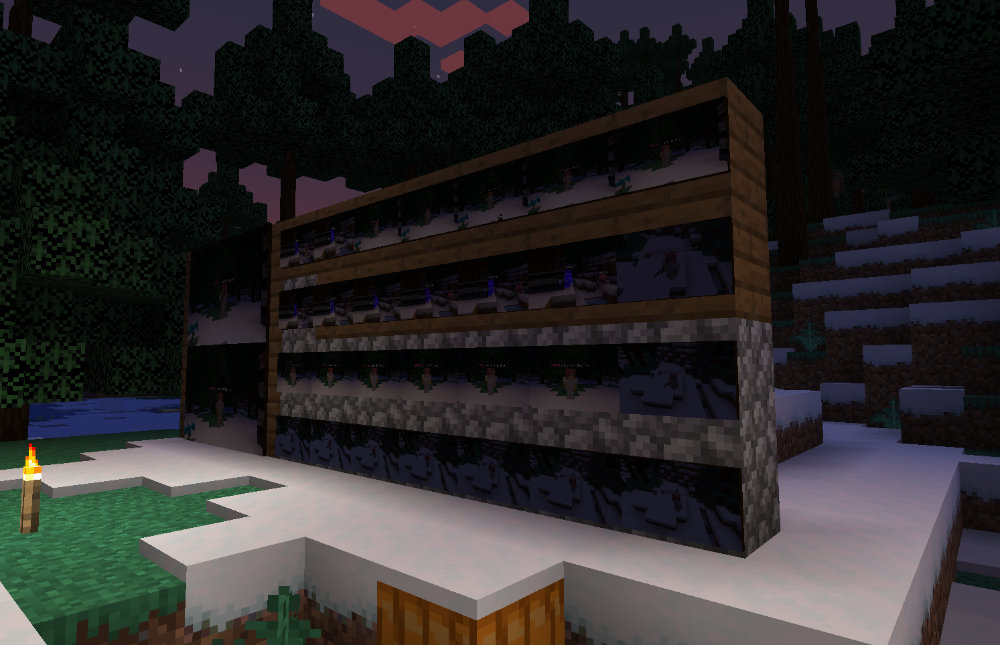
The large image-filled wall I constructed not far from Lunabunns's base for the purpose of testing FPS speeds. It's still up, as far as I know. You can go visit it for yourself. A testament to... progress?
I got a lot of great photos of Bl4ckbirds and WonderAnchor tonight, and even aided in an identity theft crime. Don't ask. They're good folks, even if they play strange songs and blast around me at the speed of light. Once again, I'm happy to be an active Flâneur.
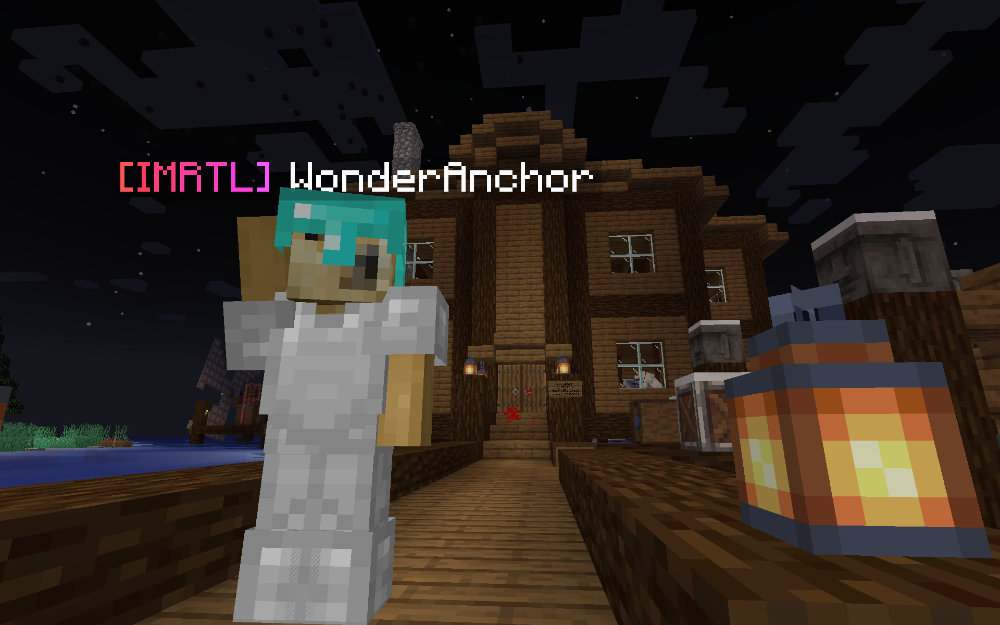
WonderAnchor standing in front of Lunabunns's base, prentending that they own it. It's a really pretty house
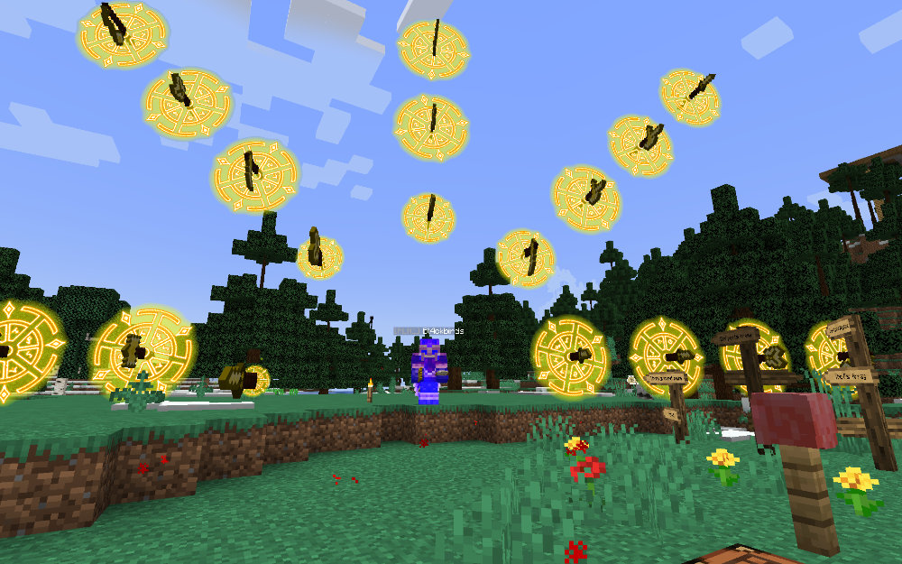
Bl4ckbirds showing off. This is a regular and welcome occurance
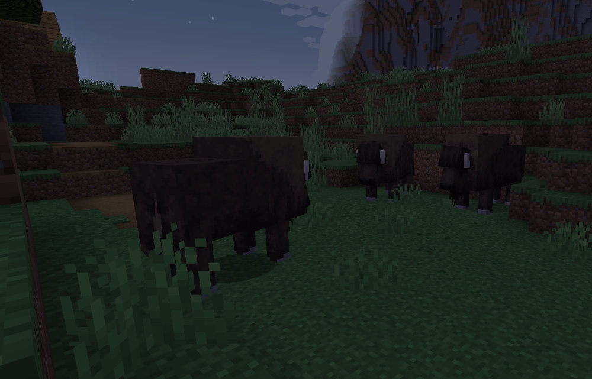
A herd of bison I stumbled upon in the wilds. It's so important that we have diverse wildlife in this modpack. It helps to balance... everything else
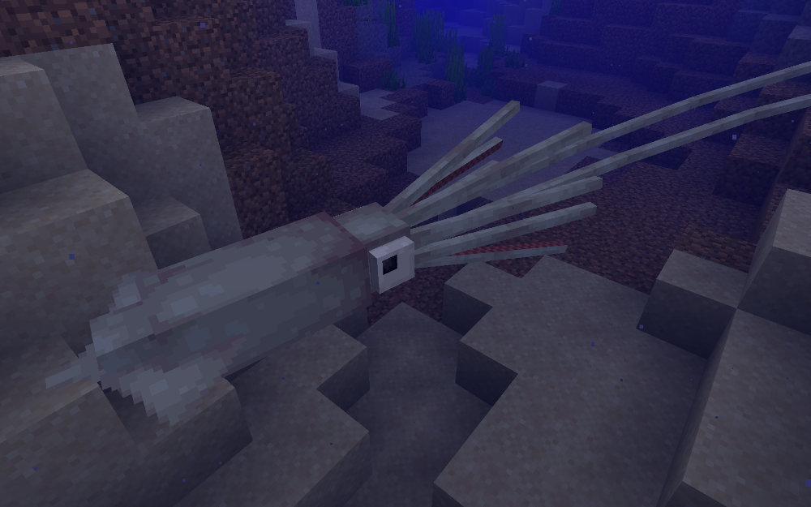
I also saw a squid! How cool is that! Squid!!!
Report 3 : The Active Flâneur
In the later hours of the evening, I find myself logging on to find the server quiet. Only 3 of us toil away at 10pm. I like this time. It allows me to do my heedless exploration and documentation at will.

A series of sizable jars behind Lunabunn's base, growing different plants for automatic harvest. It's both a delicate and violent way to collect resources
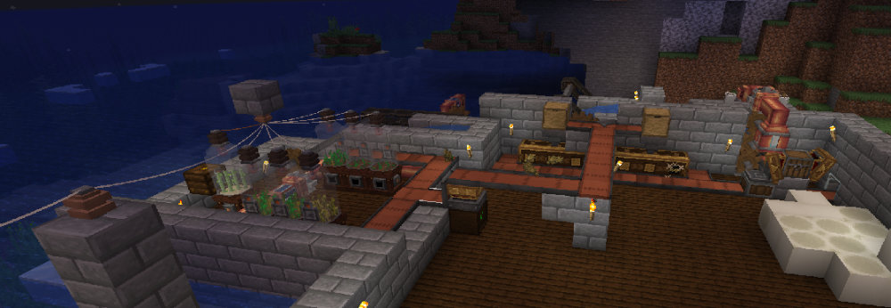
A zoomed out picture of the same setup. The other contraptions in shot are the cogs, belts, and pipes necewssary to fashion a particular food of choice: cinnamon rolls
The Communitarian 2 group has advanced by leaps and bounds! They have a few farms going, and a lovely base coming along. They even put the picture up that I took of them. So lovely :) The more that I interact with groups, photograph them, and as we'll see later, adventure with them, the more I feel a strange sense of duality. I'm both observer and actor. In stark contrast to Beaudelaire's laissez-faire dandy, I have begun to walk the delicate line between ephemerality and the concrete.
I learned that Bl4ackbirds and bdesormeau were planning on heading to somewhere called the "demon realm" to indeed "hunt demons". Asking no questions regarding the reasoning behind this goal, I asked to join, and was soon outfitted by armour and weapons well beyond my means. Don't ask, and you shall receive, I suppose.
Through a series of convoluted teleportation monoliths and the like, we were brought swiftly into a somber yet ominous set of interlocking chambers. Bl4ckbirds explained that crafted keys were required to progress further, and would open doors to chambers. I'd soon learn that these chambers held valuable resources (protected of course by legions of seemingly native skeletons and zombies). I am reminded of course once again of the colonialist bent of this all. However, this time it's different. This "demon realm" is not a native part of Minecraft. It's part of teh Blood Magic mod, and has been veritably invoked into existance through the use of the mod's tools. The colonialism and extractionism being done upon this strange, green place is crafted, scripted even. Did we forgot that about the base game? And what does it mean?
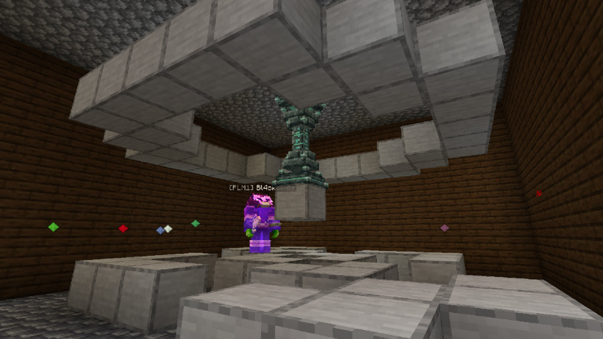
A strangely constructed room, accessible only by teleposer. In its centre, the unknowable monolith that would take us to the demon realm
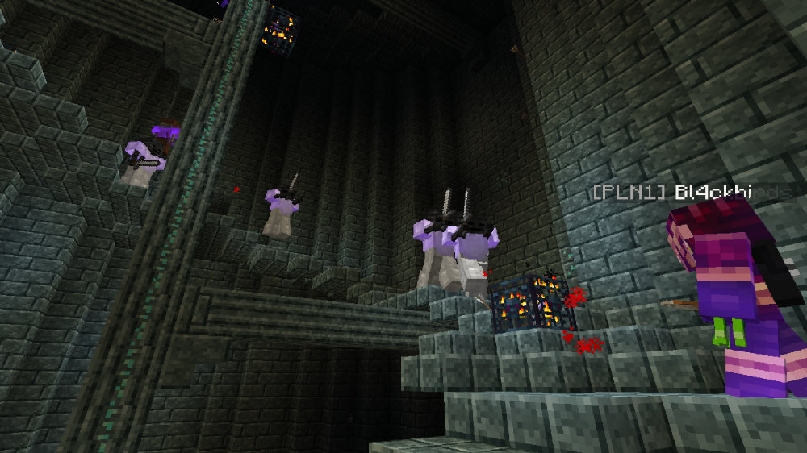
Bl4ckbirds fighting not one, but four armoured Wither Skeletons. They sure showed up in droves to serve their purpose

A moment of quiet tranquility among the nether wart and red mushrooms that grow in the demon realm. This small grotto also seems to be the home of one of the dangerous mob spawners we had to disable
The pace was quick as we zipped from room to room. I did my best to snap as many pictures as possible, whilst also firing the occasional misplaced crossbow shot. In all, the experience was quiet, frantic, and entirely claustrophobic. This was made all the more apparent after the event of my death, somewhere deep along the labyrinthine rooms. We were lucky enough to get a chance to retrieve our supplies, but everything felt quite a lot more real for a few minutes. More real than it has been previously, in my documentarian role. I know it's cliché to say, but it felt like a dream. A strange voyage through unknowable pillars, along ambient corridors, with all danger and comfort pressed skin tight. When I "awoke" from this experience, and came back to the overworld, I felt a strange sense of banality to gaze upon the farms, fields, and mountains that had so previously dominated my gameplay experience.
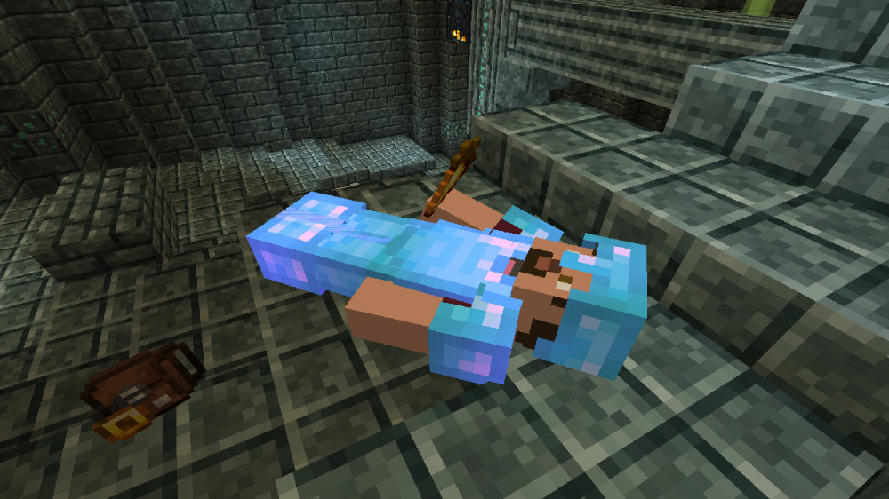
In an act of surreal domumentation, I was able to snap a picture of my own corpse, dead on the ground. In its hand, the golden carrot I was frantically trying to mucn before getting whalloped
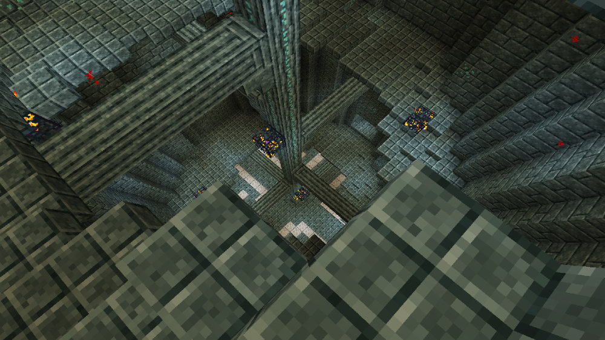
Some of the rooms in the demon realm were actually quite large, and produced a particularly vertigo-enducing effect upon looking down
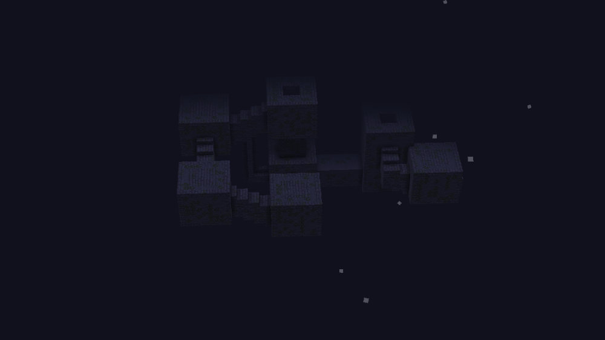
The only immsion-breaking moment of the entire escapade came from the realization that one of the walls of the realm had failed to load properly. Because of this, I was able to snap a quick picture of another demon dungeon, floating alone and undisturbed in the void. Rationalize that, modernism
A new development has arisen. We've just learned that all of the images that we've been placing with the Modern Life cameras are taking up way too much memory, and even crashing the game for other players. Woe! Tragedy and misery! We dismantled the installations (at least the large concentrations of them) as quickly as possible, and now the Flâneur base feels very empty again. nwatson was kind enough to give us the run down on how to use the other camera from the Camera Mod, and so that's what I've been trying out now. Though I still need to figure out how to get it into an item frame, but it may work. At the very least, the old F1 + F2 trick will still work just fine. That being said, I do adore the materiality of the Modern Life camera. Super410 mentioned possibly putting the canvasses back up somewhere isolated, where they won't mess with anyone's memory. A sort or Minecraft time capsule, or perhaps something akin to a buried nuclear waste dump. I think the latter is more apt. I don't think I need to say how fascinating it would be to design a Minecraft abandoned waste dump. We're all familiar with the classic "this is not a place of honour" concepts drawn up by the U.S. military in the attempt to design a graphic and textual deterrant for future societies that might stumble upon half-life graveyards.
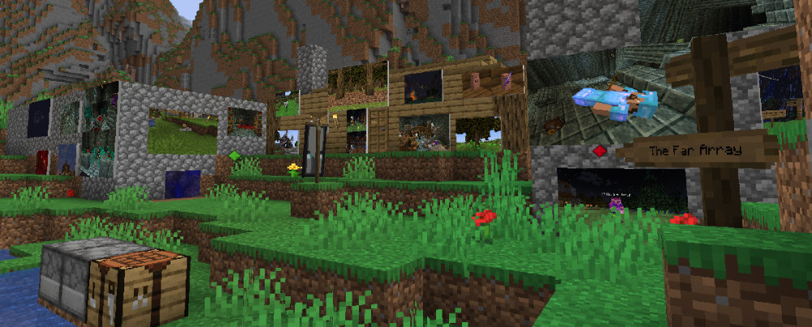
The beautiful slapdash collection of imaged pasted all over the entrance to the Flâneur base before the memory issues. Now, the walls lie empty
Due to recent busyness, I haven't had a chance to get on the server in the past couple days. So this morning's job (at least on the outset) was just to poke around with the new camera and document any changes. In actuality, this morning's job was to grieve at the loss of the Modern Life camera, and begin to reconcile with the Camera Mod one. It's a turbulent process, but a very modern one, in all truth. The old is buried by the new, but waits, humming in the dark, for its turn to be displayed once again.
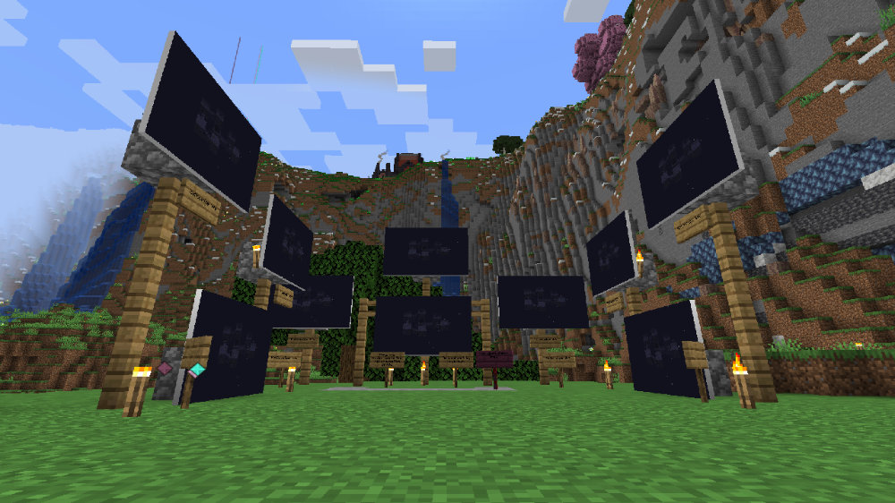
A small artistic exhibition I set up near spawn to try and provoke some discussion and maybe shake a few heads. It ended up being the lynchpin that confirmed that it was in fact the canvasses that were hurting performance. How ironic
Report 2 : Cameras, Souls, and Monuments
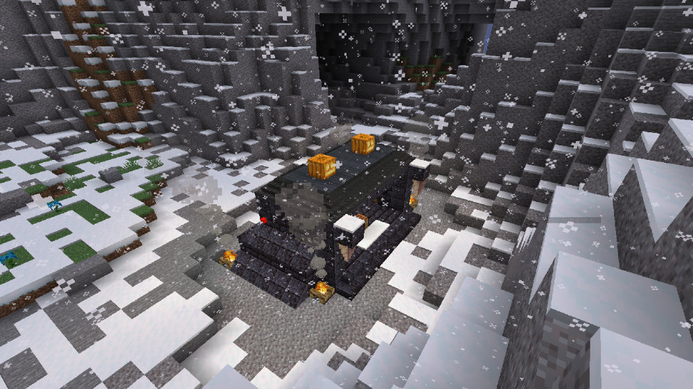
The small monument devoted the Flâneurs. You wouldn't believe what they gave us, like the roman emperor offering Dionysus goods for the sake of his counsel
I began my second session as a Flâneur with purpose, intent, and a fair amount of giddiness. I wanted to make cameras, printers, lots more books, and put them to good use. I knew that for the second official class I wanted to hop around, seeing what groups were doing, and really document the ways that the groups tackled their monuments. Becuase I was so absorbed taking phtos, and journeying between monuments, I found it difficult to actually find time to write, but in any case, here it is. Going forward, I'll be using text styling like this to represent my post-game thoughts, and text styling like this to represent my in-game thoughts. It just makes sense to me that they should be kept separate.
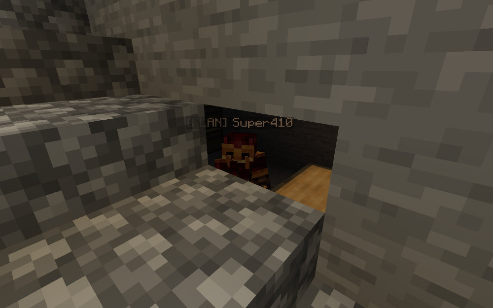
I first found Super410 in their basement, generously getting their base ready to serve as the Flâneur headquarters (at least for now)
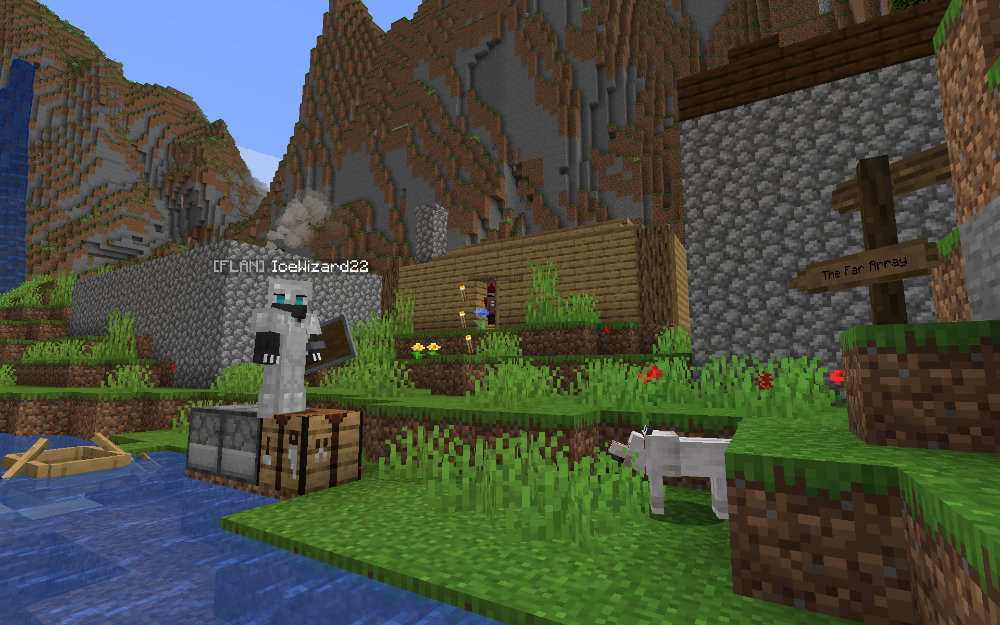
Fellow Flâneur IceWizard22 with their wolf friend hanging out near Super410's base
Hopping from group to group, I seem to find myself somewhat emotionally distant from other players. It feels weird, like I'm a ghost just floating around. I'll have a better idea sometime soon I think. Though this feeling did creep up from time to time, I found myself very welcoome by those who I did approach. It's all a matter of finding the right angle. Perhaps this is a good example of me ffeeling a lack of social credit (to tie into some readings), or perhaps I'm just being pretentious.
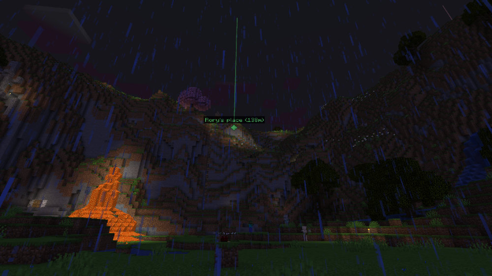
An imposing vantage just outside spawn: a gently-sloping 1.18 mountain, with rorymaplemoth's lovely base at the top

bdesormeau was kind enough to let me take a quick portrait of them standing near the Planners' base
One of the first things that I heard upon starting my photographic exploration was a remark that Lunabunn made about the newly-forming pollution blocks above their base (as can be seen in the last report). Someone had mentioned the pollution mod, and they commented that "there's a bunch of souls above my house but I don’t know what to do with them". Besides the obvious connection to the laissez-faire ideas set forth about Minecraft in Childhood's End, it just got me thinking about visualizing Minecraft death. The soul of the world being burned away. Fellow Flâneur Super410 has already jumped on death documentation, and has spent time taking photos of the "many skeletons" around the game areas. It's easy to simply count player death and note the pockmarks on the earth, but what happens when death because a landscape feature?
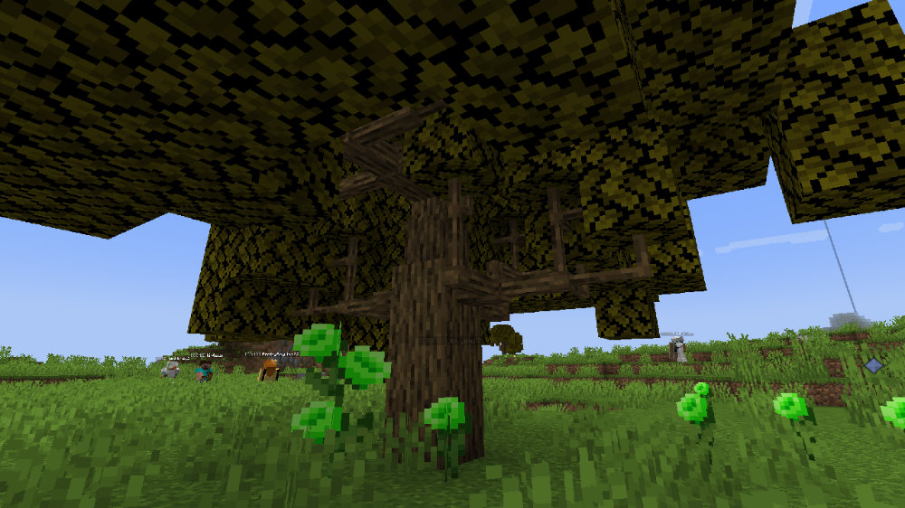
A really pretty tree from the modpack's tree mod. Just look at those branches! Where does its soul reside?
Enough fancy talk. I wanted to see what the groups were up to with their monuments. The closest was the 2nd Communitarian group, so I headed directly to them I'll let words and in-game text tell a story for now. Enjoy.
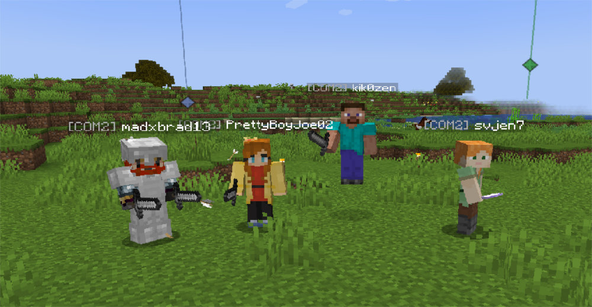
A few of COM2's members posing jovially on-route to their monument
The 2nd Communitarian group was cheerful and jovial, striding purposefully along the land when I found them. We quickly reached the monument they sought. At first, they were cautious to make it across the lava moat, but decided in time to make a small, sturdy bridge. Soon enough, all members were crawling all over. After a few more minutes I asked them how they were doing in their monument-assigned task. They replied simply that think though they were making progress, but they're not exactly sure how. They were a bit hesitant, wondering if it didn't belonged to them. Did it have meaning? Was it their job to upkeep it?
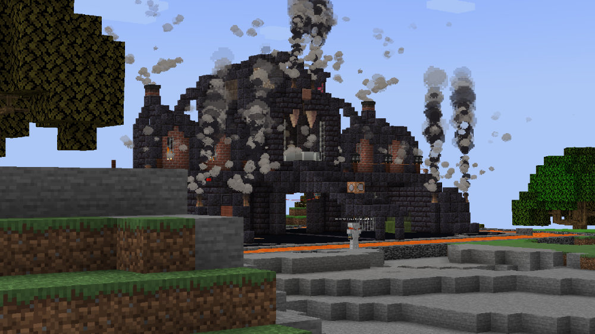
The smoking Communitarian 2 temple of confusion and allegory
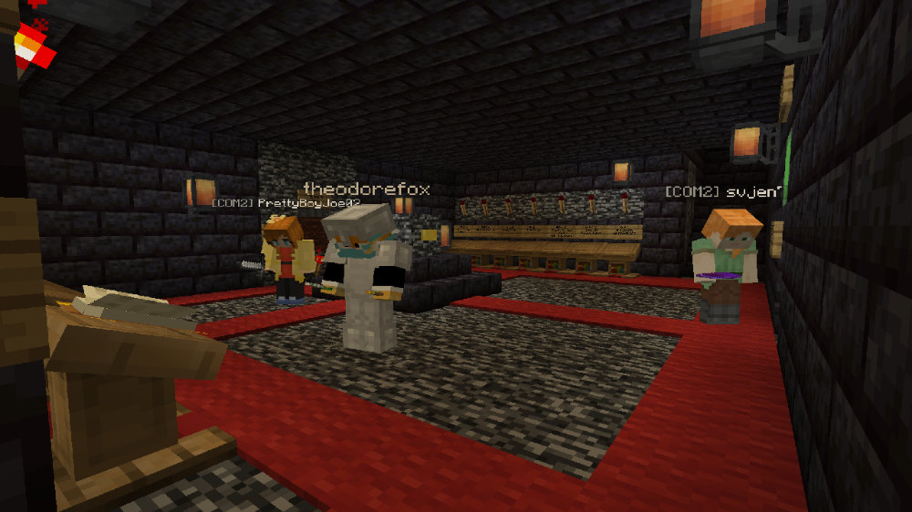
Some of COM2's members, hard at work deciphering the caretaker tasks and responsibilities
By the time I had to head out, the team had completed task 2 of many, but the momentum was there. I had faith in them. And I was excited to come back here later and see what future work they had gotten done. In all, it was a really fun day, if a tad hectic. I do think I enjoy the more passive documentation better. Sneaking around, snapping pictures, trying to decipher those "unknowable alien perspectives" and close-to-the-code things that people seem to allegorize in their after-hours creations. I like documenting the aimlessness of it all. And the growing purpose.
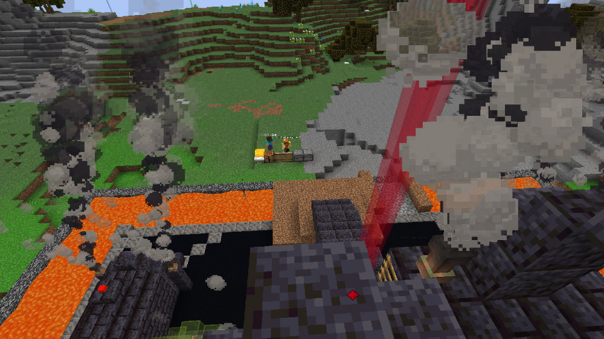
Exterior shot of the bridge and initial land-claims made by the group. A premonition of what's to come here perhaps?
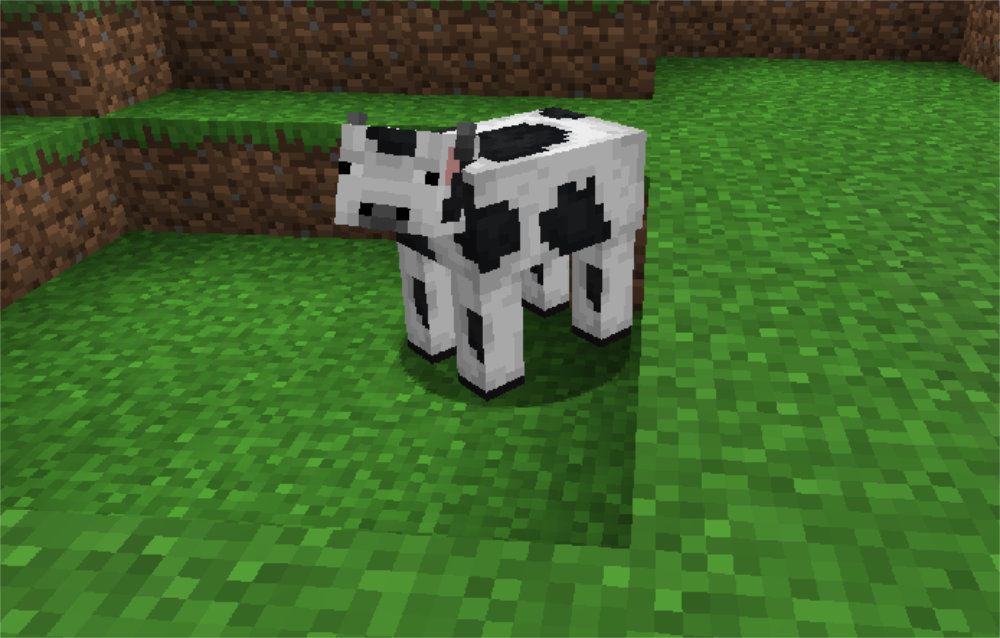
Closing image of a lovely little cow friend found wandering near the Communitarian 2 monument. Did it want to participate in the monument upkeep? Or was it part of the monument itself?
Report 1 : Initial Thoughts
I awake, for the second time, in the newly populated server. Now a converted Flâneur, I'm trying to see this place in a different light. Last I was here, I was hectically trying to figure out how I wanted to build my base, what I wanted to construct on a large scale, and how much to borrow from my fellow players. Now I know, I'll be borrowing a lot in my new role. In any case, much has changed in a week. New water wheels, enchanting tables, animal pens, and of course, more pollution. I don't really know much of what I plan to do whilst floating between creations and creators, but I know I want to document. So here I am, writing. It took me a little while to get the ingredients together for these books and quills, but they're going to be indispensable, I know it. At the end of every exploration session (and probably during), I hope to use these to document long-form reflections. We'll see just how well that goes. Maybe I can begin to parse a meaning from this madness. Maybe I'm just conceited.
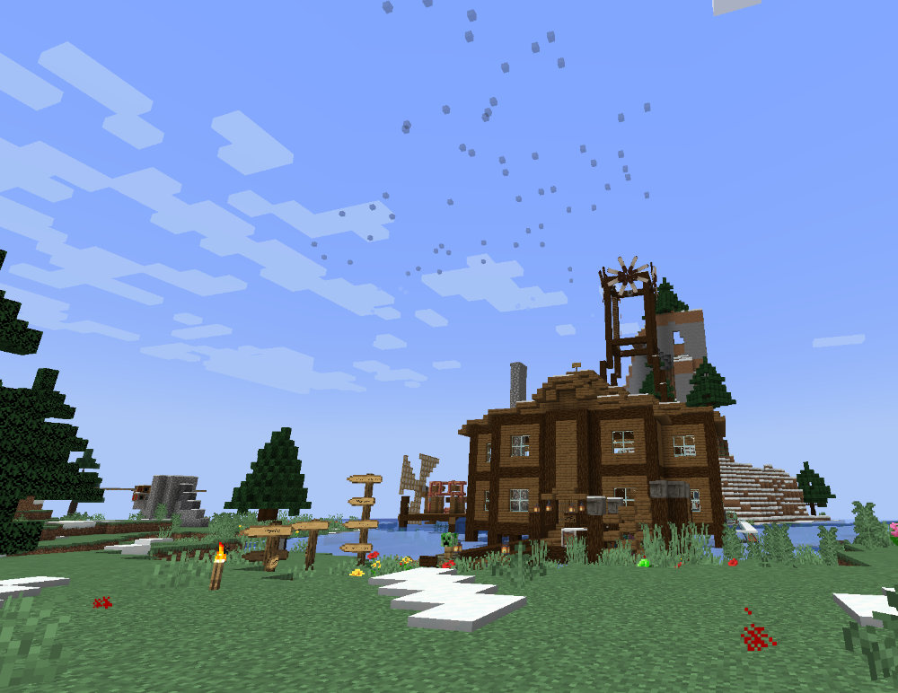
Contraptions, waypoints, and smog begin to gather around Lunabunn's base
Everyone around here seems to have a lovely hodgepodge of both vanilla and modded items just littering their many XXL-sized chests. It's kinda cute.
Spawn's changed a lot since I was last here. Big farms and sprawling tunnels for new miners. I wonder how quickly this place will become a ruin?
The brightly-lit world spawn point is quickly turning into a multi-purpose farm, blood magic, and mining area
My initial attempts to interview denizens have gone unrequited. Perhaps I need to be more persuasive.
I seem to have found some strange wood-lined blood magic pit. It feels very out of place in this rugged landscape, and the vanilla cobblestone and wood that line its perimeter give the whole thing a patchwork vibe. It's like finding a devotional figure in someone's car.
I've come across a half-made base in the middle of nowhere. It looks great so far, but has absolutely no roof to speak of. Is it abandoned? Did I just miss someone? Who knows!
The afformentioned roofless house owned apparently by ssalad. I like the windows a lot
Welp, I just indirectly blew up someone's front door. Kinda. A creeper followed me inside a ring of torches and blew up right as I was leaving. Lovely. People are generously letting me come inside and take whatever I want (though I have yet to take them up on that). I feel bad that this is how I greeted someone in their lovely home. But I suppose it's fortuitous. I should give them a gift as an apology.
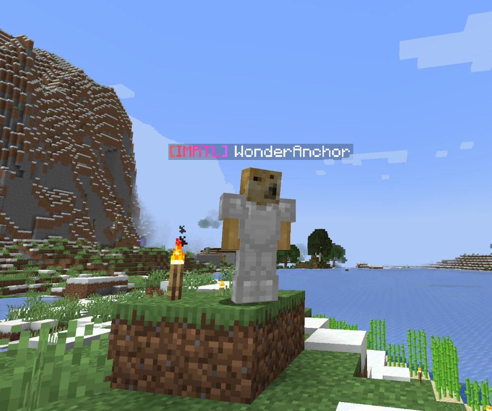
Quick portrait of WonderAnchor, who was far too polite with me after I aided a creeper in exploding their foyer
The interior of WonderAnchor's base, only seconds before the creeper would make its advance
Just got killed by a creeper. Another one. I suppose this is going to be my life for the next while, as I travel between bases and monuments. It's lonely, but incredibly funny.
My blatant disregard for my own safety when it comes to mobs and fall damage is astounding. But ahhh, the things we do for content...
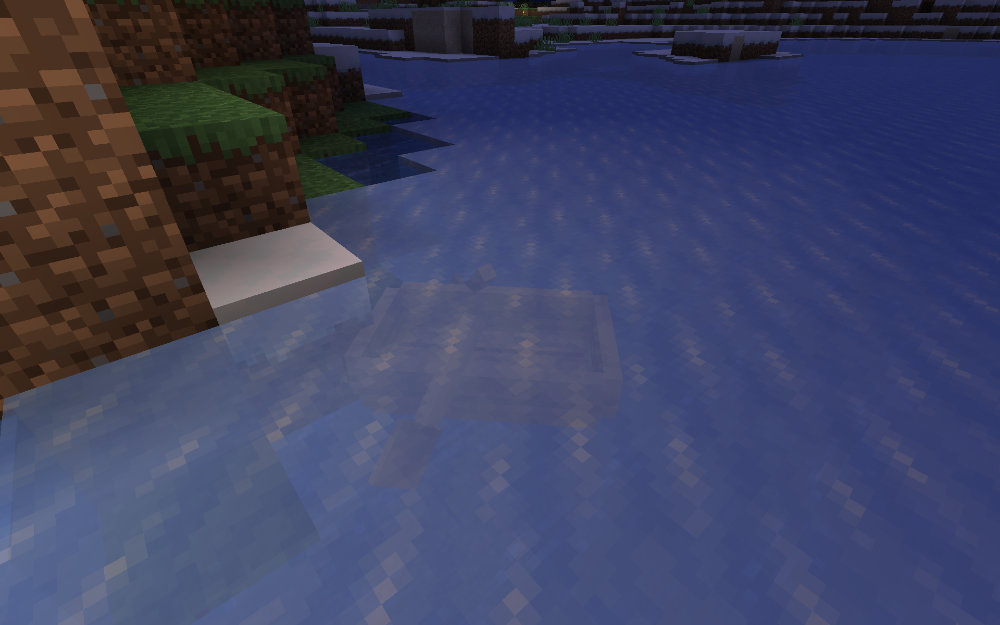
A boat I saw, frozen under a layer of ice. Would have been very easy to miss if I wasn't looking down. I wonder how long it'll stay here?
I really like how everyone's just toiling away at their own tasks, seemingly completely oblivious to everything else. I wonder how things will start to shape up as groups are solidified.
rorymaplemoth's bright, homey kitchen. 10/10 would bake a blocky cake here
I found another large-scale farm. The animal noises are incessant. Calming I suppose, but also kinda off-putting. This one is well lit, and relatively spacious. But still, it feels weird when no one's around.
As I return to my perch near Luna's base to conclude msy first Flâneur romp, I'm greeted once again by snow. Falling slowly as it always seems to doing this part of the map. I think I'm ready to take on some of the more intimidating parts of the map now, and I feel excited to get as integrated as possible. Time will tell what revelations and allegories come when next I log on.
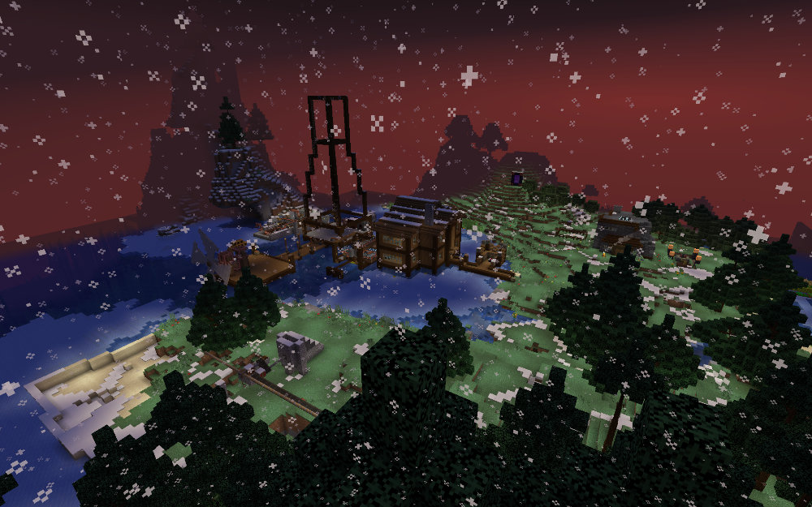
Lunabunn's base in its current entirety, as seen from my empty little perch. I can see that good things are brewing...

More snow falling down over a dark landscape, illuminated only by the deceptively warm Nether portal lights that dot its landscape